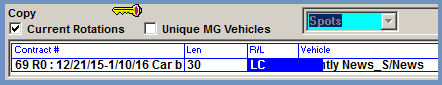

Live Copy
Live Copy can be used when the Live Copy checkbox is checked in Traffic Site Options->Opt->System Options. To enter Live Copy on the Copy screen, there must be a contract with a line specified to use “Live Copy” in the audio type field.
There are two restrictions on Live Copy rotations:
- Regional/Split copy and blackouts are not allowed.
- Airing vehicles cannot be selected.
Script Entry
Live scripts can be entered in the Copy Inventory Screen by clicking in the Script/Comment field for a piece of inventory and typing in the Live script that should be used.
To enter a live copy script, bring up the Copy Inventory screen.
Click in the Script/Comment field to bring up the Script screen where the live script can be entered as shown below.
The Script screen allows you to change the font in various ways and run Microsoft Spell Checker on the text to check for spelling errors.
Script text can be copied from one document into the Script screen as follows:
- Using the mouse, highlight the text you want copied.
- Press “Ctrl C” to copy the text.
- Click in the Script/Comment field then press “Ctrl V” to paste the text into the Script field.
Once you have completed the script input either by manually entering it or by copying and pasting it from another document, press Tab to exit the script screen and return to the Copy Inventory screen.
Save the inventory along with the script by pressing the Save button.
Live Copy inventory will appear in the Inventory box along with regular copy inventory.
Live Copy Rotation Entry
When there’s Live Copy inventory defined, it can be used to create Live Copy rotations.
Live Copy rotations can be created for contract lines that are using the “Live Cmml” audio type as defined on the contract line override box.
To enter a Live Copy rotation, first select the advertiser from the Copy screen advertiser dropdown, select the Contract and Length, then tab to the “R/L” field. Select “LC” from this field then press Tab.

Selecting “LC” will change the Inventory area from showing all inventory to showing Live Copy inventory only. (If no inventory is showing up in the Inventory area after selecting “LC”, then no Live Copy inventory is available for the selected advertiser.)
Continue filling out the rotation header area following the standard procedure, then drag the correct Live Copy inventory to the Rotation Instructions area and save the new rotation.
Live Copy Reports
- Live Copy Script will show on the Copy Inventory by Advertiser, Entry Date, Expiration Date, and Start Date reports.
- The Contracts missing Copy Report has a column labeled “R/L”. For contracts that have live copy, you will see a “LC” in this column to indicate live copy is needed.
- Copy Book will print the live copy scripts for the days that have had copy assigned.
- Certificates of Performance C18 and C19 print the script text. (Copy must be assigned for the script to be output on the report.)
- The Copy Rotations by Advertiser report indicates whether a rotation is defined for Live Copy.